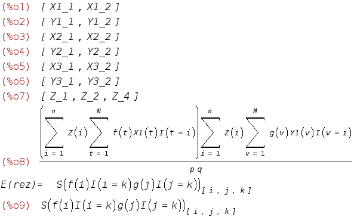

/*
wxMaxima 0.7.1 http://wxmaxima.sourceforge.net
Maxima 5.10.0 http://maxima.sourceforge.net
Using Lisp GNU Common Lisp (GCL) GCL 2.6.7 (aka GCL)
Distributed under the GNU Public License. See the file COPYING.
Dedicated to the memory of William Schelter.
This is a development version of Maxima. The function bug_report()
provides bug reporting information.
(%i1)
load("/exports/adobra/cvs/CASEY/maxima/casey.mac")$
(%i1)
makeRV(X1, BernouliSampling, [p]);
makeRV(Y1, BernouliSampling, [q]);
/*
frm1: 1/(p*q)*sum( sum( f(i,j)*X1(i)*Y1(j), i,1,n), j,1,n);
print("Expectation=",makeTensor(dsimplify(E(frm1))));
print("Variance=", makeTensor(dsimplify(var(frm1))));
*/
makeRV(X2, UniformSamplingWithoutReplacement, [N,Np]);
makeRV(Y2, UniformSamplingWithoutReplacement, [M,Mp]);
/*
frm2: N*M/(Np*Mp)*sum( sum( f(i,j)*X2(i)*Y2(j), i,1,N), j,1,M);
print("Expectation=",makeTensor(dsimplify(E(frm2))));
print("Variance=", makeTensor(dsimplify(var(frm2))));
*/
makeRV(X3, UniformSamplingWithReplacement, [N,Np]);
makeRV(Y3, UniformSamplingWithReplacement, [M,Mp]);
/*
frm3: N*M/(Np*Mp)*sum( sum( f(i,j)*X3(i)*Y3(j), i,1,N), j,1,M);
print("Expectation=",makeTensor(dsimplify(E(frm3))));
print("Variance=", makeTensor(dsimplify(var(frm3))));
*/
makeRV(Z, AMS, []);
rez: 1/(p*q)*sum( Z(i)*sum( I(t=i)*X1(t)*f(t),t,1,N),i,1,n )*
sum( Z(i)*sum(I(v=i)*Y1(v)*g(v),v,1,M),i,1,n);
print("E(rez)=",makeTensor(dsimplify(E(rez))));

(%i10)
makeTensor(dsimplify(var(rez)));
(%i11)